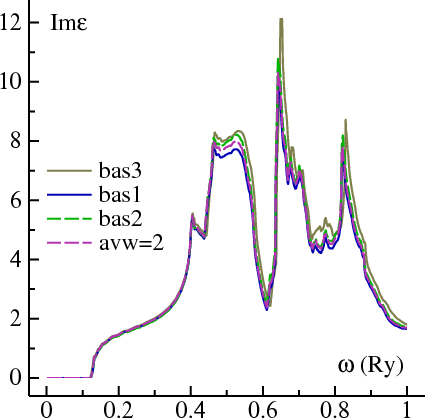

Optics package (v7.10)
Purpose
The optics package enables the computation of the imaginary part of the q→0 dielectric
response function Im ε(ω), and also the joint
density-of-states, JDOS(ω).
The package has been implemented in the ASA and full-potential band codes, lm and
lmf. It was adapted from a program written by
S. Rashkeev and W. Lambrecht, who in turn adapted it from several
other authors. Rashkeev and Lambrecht also implemented an nonlinear
optics branch in the ASA, which is available here. Ben Kaube
implemented the lmf version.
The package allows you to calculate one of:
- Im ε(ω), without local-field effects
- JDOS(ω), the joint DOS between unoccupied conduction band
states c and occupied valence band states v,
JDOS = ∑c,vδ(εc−εv−ω).
In the spin polarized case, c and v belong to the same spin. JDOS(ω)
and Im ε(ω) are very similar; except the
latter has a matrix element of the momentum operator, whereas
JDOS does not. One important difference: the gradient operator
has 3 components for xyz polarizations, whereas JDOS has only 1.
- JDOS+−(ω) the joint DOS between majority-spin
unoccupied conduction band states c and minority spin occupied
valence band states v (only relevant for spin polarized
calculations); alternatively, JDOS−+(ω).
JDOS+−; is to the transverse spin suspeptiblity as
DOS is to Im ε.
- DOS(ω): the usual DOS, D(ω) = ∑iδ(εi−ω).
In addition to calculating one of the above, the user may also
decompose whichever quantity (say JDOS for definiteness) in one of
several ways:
- by wave number k;
- into individual contributions from (occ,unnoc) pairs
- by both k and (occ,unnoc) pairs
- project out the
Mulliken decomposition to JDOS from a particular orbital, or group of orbitals.
lm and lmf differ only in how the optical matrix
elements are calculated: they use the same input system and
call the same optics routines. Thus the input, output and this
documentation apply to both lm and lmf.
Several Brillouin zone integration methods are in the package. The
fastest, but least accurate, is a sampling method (
LTET=0).
There is a plain tetrahedron integrator (LTET=1 or LTET=2 below).
But its applicability is restricted to only a few of the options
listed above). There is also a sophisticated tetrahedron integration
(LTET=3), adapted from a GW
package. It is the most memory intensive but offers all the options
available. Unless you want k-resolved or Mulliken-resolved
output, and you are working with an insulator, LTET=1 is recommended as it takes less
memory, runs faster, and seems to be slightly more accurate than the
LTET=3 integrator.
Doing Optics Calculations
There is a significant cost to calculate of the dielectric function, even just the bulk Im ε(ω).
This is because the number of (occ,unocc) pairs scales quadratically with system size.
Thus while the cost of a normal band calculation scales as N3,
the cost to calculate Im ε(ω) scales as N4, with N
the number of states in the unit cell.
Moreover, to obtain good resolution in Im ε(ω), you need a rather fine k mesh.
Input for optics
The optics takes its input from category OPTICS, documented in
tokens.html.
An eigenfunction ψi(r)
can be decomposed according to a Mulliken analysis:
ψi(r) =
ΣlmClm(i)
χlm(r)
Coefficients C are the projections of ψi onto
basis functions χlm(r). (Note: index lm applies
only the ASA basis with 1 atom/cell. When more
than 1 atom is involved lm→Rlm; also the lmf basis
can have more than one radial function per Rlm). We can "decompose" the unit norm of
|ψi(r)|2 (which integrates to unity)
into fractional parts
|Clm(i) |2,
which must sum to 1 (assuming an orthogonal basis, which isn't the case --- so the
formulas have to be adapted to include the overlap matrix). This is known as a Mulliken analysis.
Inputs for the Mulliken decomposition are not entered in the ctrl file.
Instead you must use command-line arguments --jdosw. For example:
--jdosw~5,6,8~7,9
will project out (by Mulliken projection) only the part of the occupied-state
belonging to orbitals 5,6,8, and the part of the unoccupied-state
eigenfunctions belonging to orbitals 1:4,7,9. (If the material were Fe with
spd orbitals, 5,6,8 are the t2g orbitals and 7,9 are the eg orbitals.)
The program will generate (in file jdos.ext; see below)
two JDOS: the full JDOS and the projection onto the subset.
You can optionally supply a pair of projections. The second
projection has the same structure as the first; the switch to specify
it is --jdosw2. Thus:
--jdosw~5,6,8~7,9 --jdosw2~7,9~5,6,8
specifies that two channels are to be generated in addition to the total JDOS:
first channel has (occ,unocc) = (5,6,8 and 7,9) as before;
second channel has (occ,unocc) = (7,9 and 5,6,8). In the latter
channel the Mulliken projections of valence and conduction states are
interchanged.
If you are using configure, add switch --enable-optics when invoking it.
Not documented yet; sorry.
The tests cases both test and illustrate various branches in the optics code.
A fair amount of useful information is printed out when the tests are run,
to help you see what's going on.
For the ASA package there are the following:
optics/test/test.optics [material]
where material is one of: (ogan fe si mngas sic)
The first three tests calculate Im ε using two kinds of tetrahedron and sampling integration.
In the GaN case (material is ogan) FILBND and EMPBND are demonstrated.
Test 4 generates joint DOS, resolved by individual bands, using
the simple tetrahedron integration.
In the Fe case, JDOS is made for the first spin.
Test 5 generates joint DOS, resolved by individual bands, using
the advanced tetrahedron integration.
In the Fe case, JDOS is made for the second spin.
Also the JDOS is Mulliken-projected onto two different channels,
to illustrate which orbitals (t2g and eg) contribute
to the JDOS. Since only two channels can be generated at a time,
the calculation runs twice so all four combinations,
Locc=5,6,8 and Lunocc=5,6,8 Locc=5,6,8 and Lunocc=1:4,7,9;
Locc=1:4,7,9 and Lunocc=5,6,8 Locc=1:4,7,9 and Lunocc=1:4,7,9
are generated.
Moreover, the JDOS is further resolved into (occ,unocc) pairs.
Test 6 generates JDOS, resolved by k
In the Si case, a q vector is specified, so you can see the
joint DOS between the VBM at the Γ point and the CBM near
the X point.
Test 7 generates single DOS, resolved by k
In the fe case, it also performs a Mulliken projection
with switches --jdosw~5,6,8 --jdosw2~7,9
(Note in the DOS case there is only a single kind of orbital, not a pair)
This test also invokes the optics file editor.
Test 8 generates Im ε resolved by band pairs, and by k (two separate calculations)
Test 9 is for nonlinear optics
For the FP package there are the following tests :
fp/test/test.fp fe (Im eps and JDOS for a spin polarized case)
fp/test/test.fp zbgan (Im eps and JDOS)

The FP optics package has been little tested so far. One important check of its operation is the
dependence of Im ε on choice of sphere radii and basis set. There should be little dependence
provided the basis is well converged.
The figure shows Im ε(ω) for the following conditions:
- bas1: the standard test, fp/test/test.fp zbgan,
It uses the Ga 3d state as valence and the 4d as a local orbital. The N 3s and 3p states
are also included as local orbitals. (The k mesh was increased to 30 divisions to improve resolution).
- bas2: the Ga 4d is valence and the 3d is a local orbital.
- bas3: the Ga 3d is valence; there are no local orbitals.
- avw=2: same basis as bas1 but the sphere radii are reduced by 5%.
All tests yield nearly identical Im ε(ω).
bas3 shows small shifts in peaks, possibly because of loss of precision in the Ga d channel or the N s channel.